The principles that separate confusing interfaces from clear ones.
Design is not about taste. It is about communication: guiding users to the right content with minimal friction.
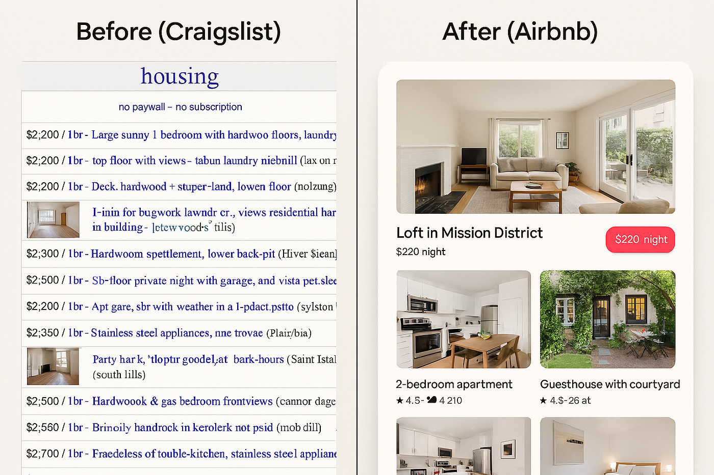
Same function. Wildly different design. Both list rentals — one communicates trust and clarity from the first second.
Try it yourself — click "Start" to see a page for 5 seconds, then answer the questions below.
Now answer without scrolling back up:
On content-heavy pages (blogs, news, search results), eye-tracking studies show users read in an F shape:
Best for: Articles, documentation, search results, email inboxes
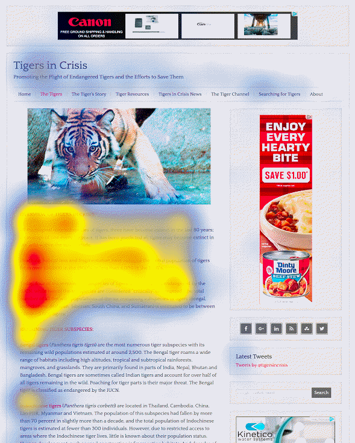
Eye-tracking heatmap showing F-pattern on a content page. Bright = most viewed.
On sparse, image-driven pages (landing pages, hero sections), the eye traces a Z shape:
Best for: Landing pages, hero sections, marketing pages
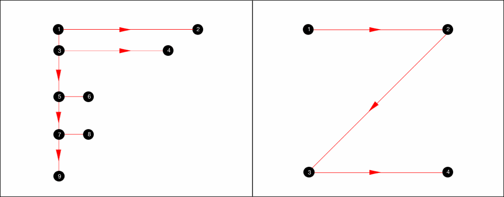
The Z-pattern traces: logo → nav → diagonal → CTA button
Every design decision pulls one or more of these levers. Think of them as a mixing board.
| Lever | How It Works | Example |
|---|---|---|
| Size | Larger elements attract attention first | 48px headline dominates 14px text |
| Contrast | High contrast against the background stands out | Dark text on white; bright button on muted BG |
| Color | Saturated / warm colors pull focus | Red notification badge on gray toolbar |
| Whitespace | Isolation makes elements feel important | Apple product pages: photo + emptiness |
| Position | Top & center carry implied importance | Hero headlines above the fold, never in footer |
Adjust each lever to see how visual weight changes. The goal: make one element dominant.
Adjust the sliders above to see how each lever affects visual weight.
Whitespace is a deliberate design choice that communicates confidence and premium quality.
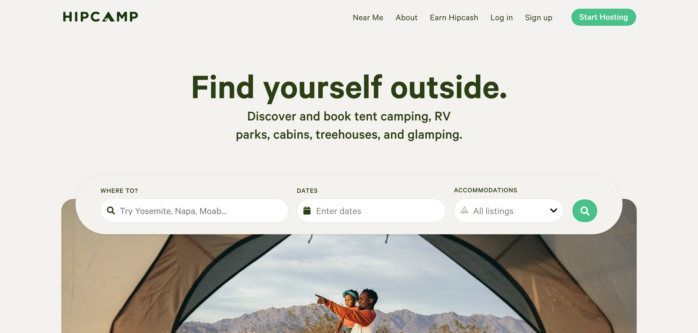
Intentional emptiness. Your eye has nowhere else to go — that's the point.
Toggle between "No Hierarchy" and "Clear Hierarchy" to see the difference one principle makes.
Currently: all text is the same size, weight, and color. Nothing stands out. This fails the 5-second test.
German psychologists discovered: we perceive groups and patterns before individual elements. Design with the brain's wiring, not against it.
Elements close together are perceived as related. The classic failure: a form label equidistant between two fields.
Toggle to see the difference:
Currently: labels are equidistant between fields. Which field does "Last Name" belong to?
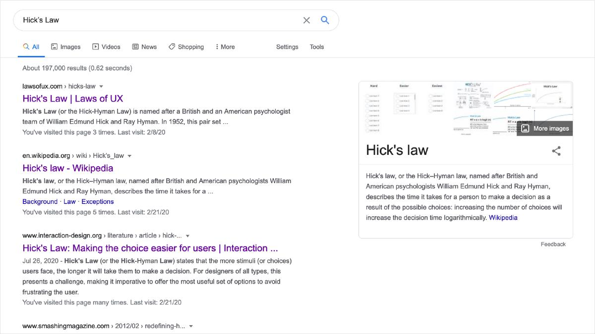
Google results: tight spacing within a result, wider gap between results. Your brain groups instantly.
The eye follows lines and curves. Netflix's horizontal scroll rows: thumbnails extend past the edge, implying "more."
The partially visible card on the right invites scrolling.
The brain completes incomplete shapes. The FedEx logo hides an arrow between E and x.
A partial circle — your brain fills in the rest.
Elements that look alike are perceived as the same type.
The different one = "you are here."
Click "Show Modal" to see figure/ground in action. The dimmed overlay = ground. The modal = figure.
This is the main page content. It has text, images, and navigation elements. The user is reading this when suddenly...
...a modal appears! Watch how the background dims and the modal comes forward. Your brain instantly knows what to focus on.
Are you sure you want to proceed? This action cannot be undone.
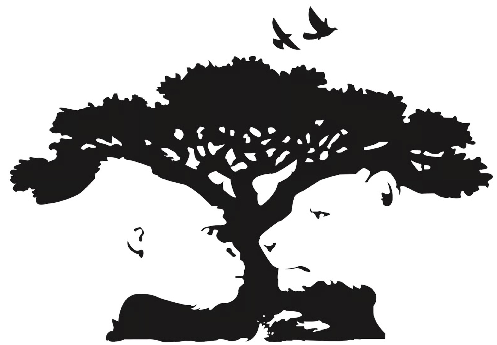
Short-term memory holds roughly 7 ± 2 items. Chunking breaks information into digestible groups.
8005551234
(800) 555-1234
How many nav items feel comfortable? Click to add more:
Items: 0 — Add items to see when it becomes overwhelming.
The more options a user has, the longer it takes to decide. The relationship is logarithmic.
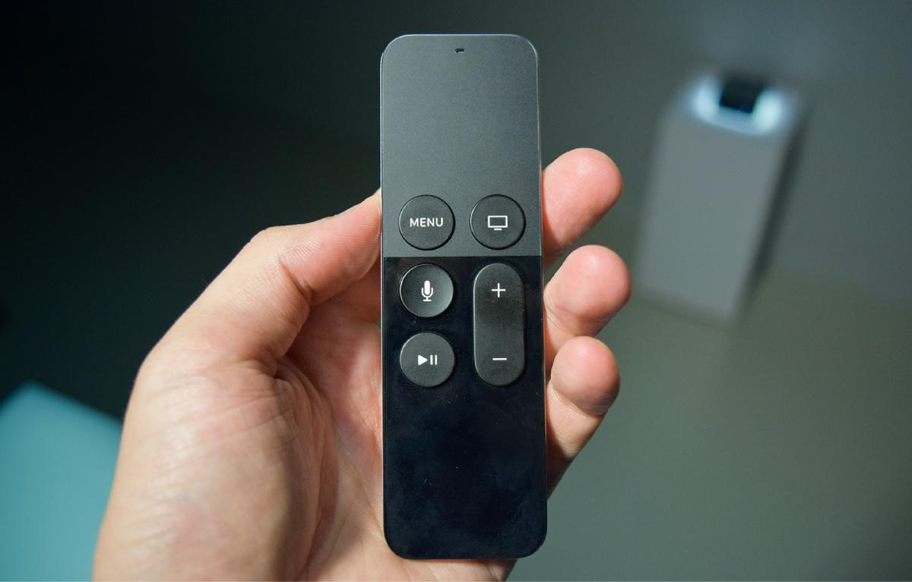
50-button remote vs. 5-button remote. Same TV. Different experience.
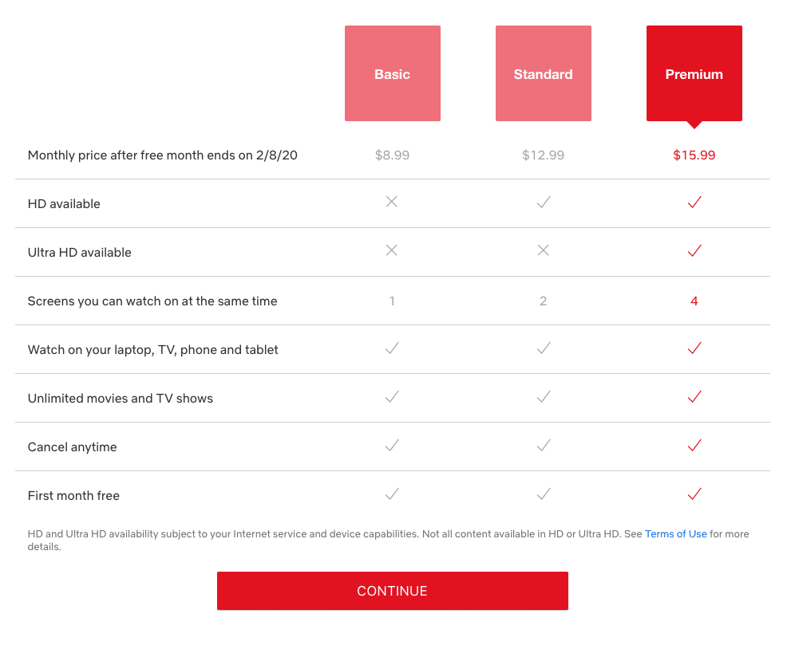
Show only what's needed at each stage. Reveal complexity when the user is ready.
Color communicates emotion without words. These associations are not universal across cultures.
Allocate your color palette in this ratio:
Try different accent colors:
The developer platform that just works.
Get Started FreeWCAG requires:
Ratio: 2.85:1 FAIL — Below 4.5:1 minimum
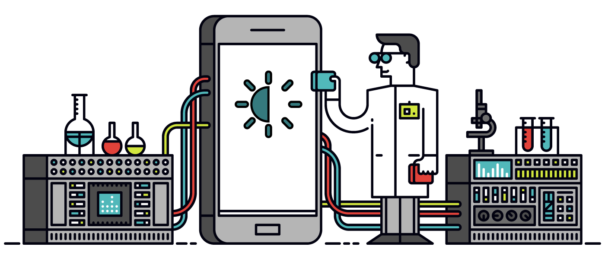
Left: fails WCAG. Right: passes. The difference is dramatic outdoors.
Each level has a distinct job:
| Category | Personality |
|---|---|
| Serif | Trust, editorial (NYT, Vogue) |
| Sans-serif | Modern, clean (Google, GitHub) |
| Monospace | Code, precision (terminals) |
| Script | Accents only — never body |
One for headings, one for body. Vary weight and size within those families before adding a third.
Adjust line width:
Width: ~60 characters — Ideal range (45-75ch)
Users spend most of their time on other websites. They expect yours to work like those.
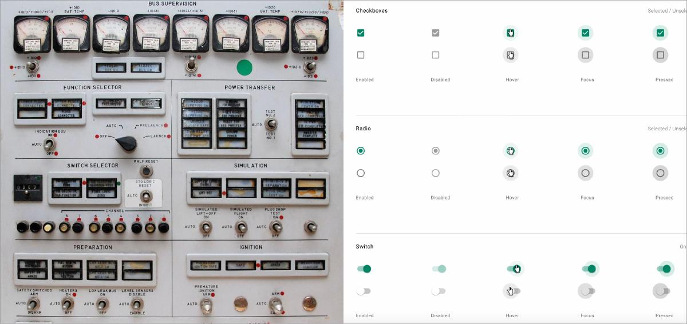
Common conventions: logo top-left, cart top-right, search in header. Move them and users get confused.
Time to reach a target depends on its size and distance. Larger + closer = faster.
Try clicking each. Notice which is easier to hit.
Click a target to see the effect of size.
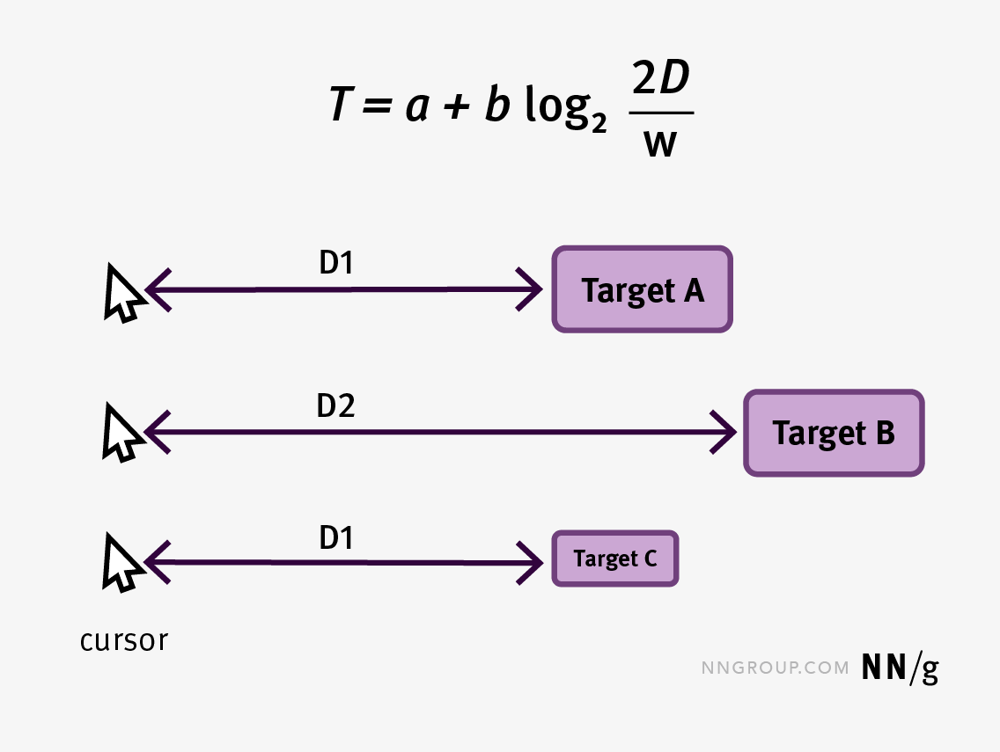
Small + far = slow. Large + close = fast. Primary buttons should be the easiest to hit.
An affordance is a visual cue that tells users what an element does.
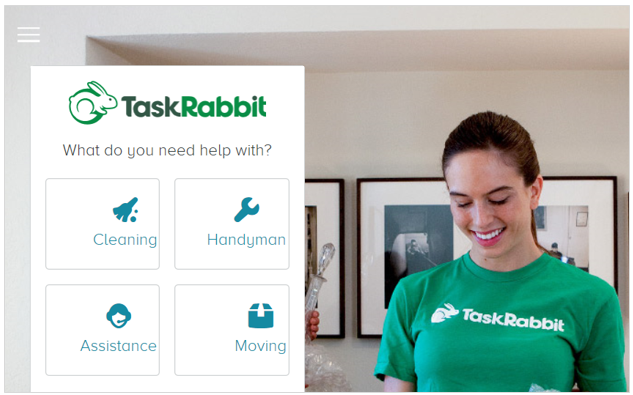
Each element's visual style communicates what it does before interaction.
Show your page for 10 seconds, then ask:
If they can't answer both, the hierarchy failed.
Five questions to evaluate any design. Ground feedback in principles, not preferences.
What draws the eye first, second, third?
One obvious CTA, or attention split?
How many decisions in the first 5 seconds?
What patterns are used or broken?
One specific improvement with a reason.
Published 1994. Still the industry standard. Use as a checklist for any interface.
No files yet
Upload your first file to get started.
Skeleton screen — feels faster than a spinner
Something went wrong
We couldn't load your files. Check your connection and try again.
File uploaded successfully!
report-q4.pdf (2.3 MB) is now available.
Once you know how your interface works, you can't un-know it. The only way to find real problems: watch someone else try.
Testing with 5 users reveals ~85% of usability problems. You don't need 50.
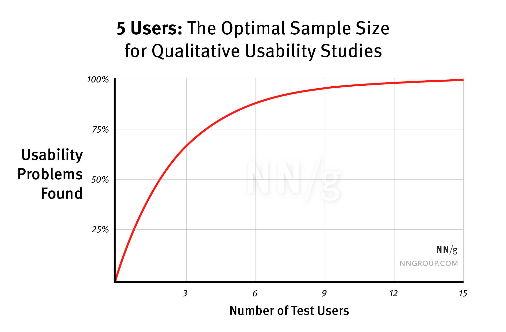
Steep climb through 5 users, then diminishing returns.
Ask users to narrate: "I'm looking for the login... I think it's up here..."
What to watch for:
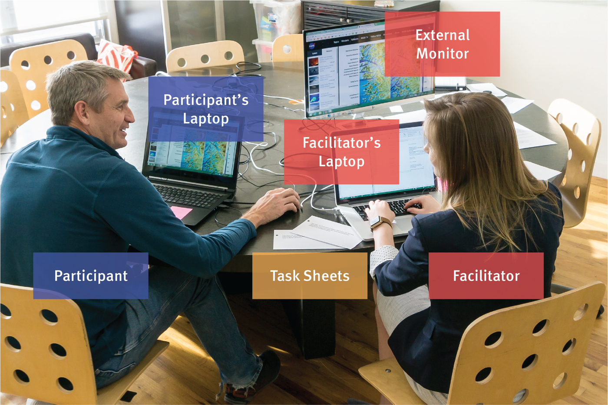
Don't ask "What do you think?" Give specific tasks:
Measure: completion rate, time, errors
Quick, informal, low-cost. Grab anyone who hasn't seen your design.
Version A → 50% of users. Version B → other 50%. Measure.
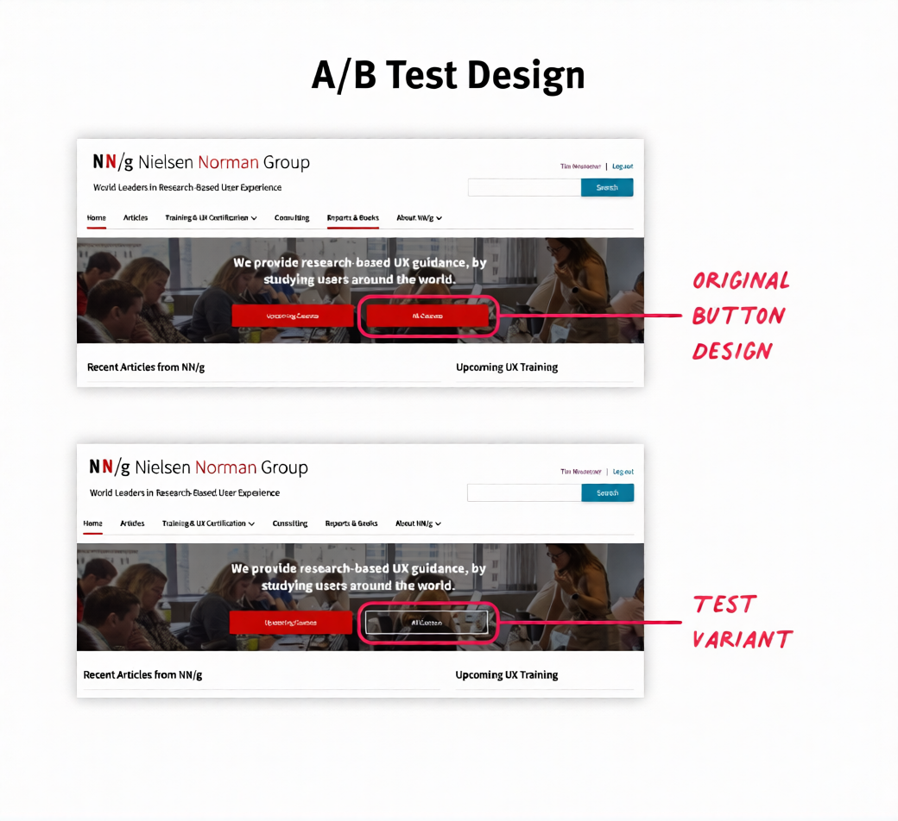
Google tested 41 shades of blue. Winner = $200M/year more revenue.
Now that you know what good UX looks like, here's what to never build:
"No thanks, I don't want to save money."
Opt-out buried in tiny text behind multiple clicks.
Free trial auto-converts to paid with no warning.
Visual hierarchy highlights the company's preferred option while hiding yours.
Mobile-first is not a CSS technique. It's a design philosophy: start with the smallest screen and add complexity as space allows.
Luke Wroblewski coined "Mobile First" in 2009. Twitter proved it: one input, "What's happening?" Mobile constraint forced clarity.
| Pattern | Behavior |
|---|---|
| Mostly Fluid | Columns stack to single column. Most common. |
| Column Drop | Columns drop one at a time: 3 → 2+1 → 1+1+1 |
| Layout Shifter | Layout fundamentally reorganizes. Most flexible. |
| Off Canvas | Content slides in/out from the side on demand. |
Test: "What happens at phone / tablet / 27″ monitor?" If you can't answer all three, it's not responsive.
Drag the slider to simulate different screen widths and watch how each pattern adapts.
Mostly Fluid
Column Drop
Layout Shifter
Off Canvas
A wireframe is a blueprint. No colors, no images, no final copy. Just boxes and labels showing what goes where.
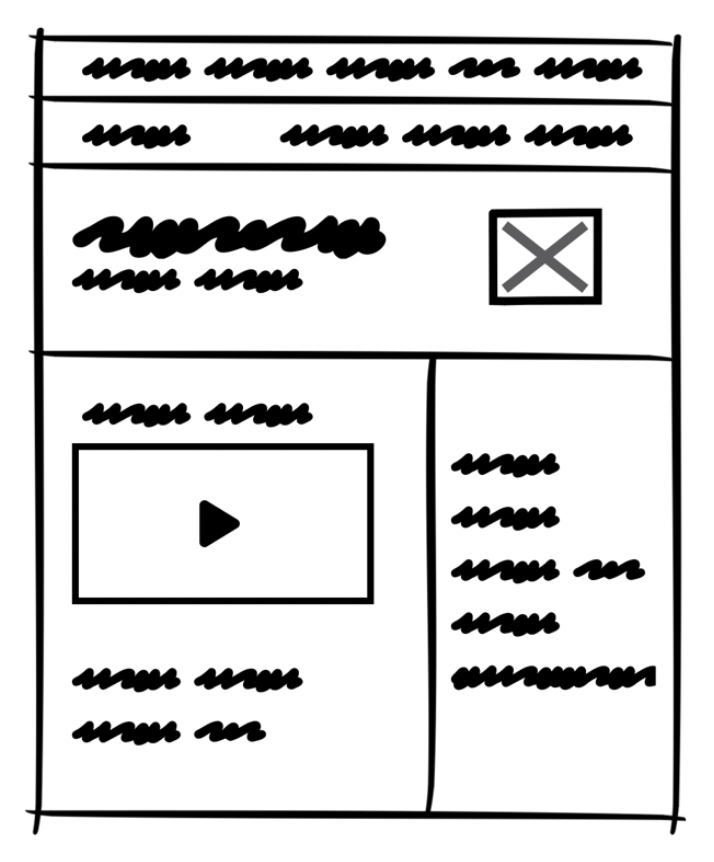
Intentionally rough. Gray boxes, labels, no style to debate.
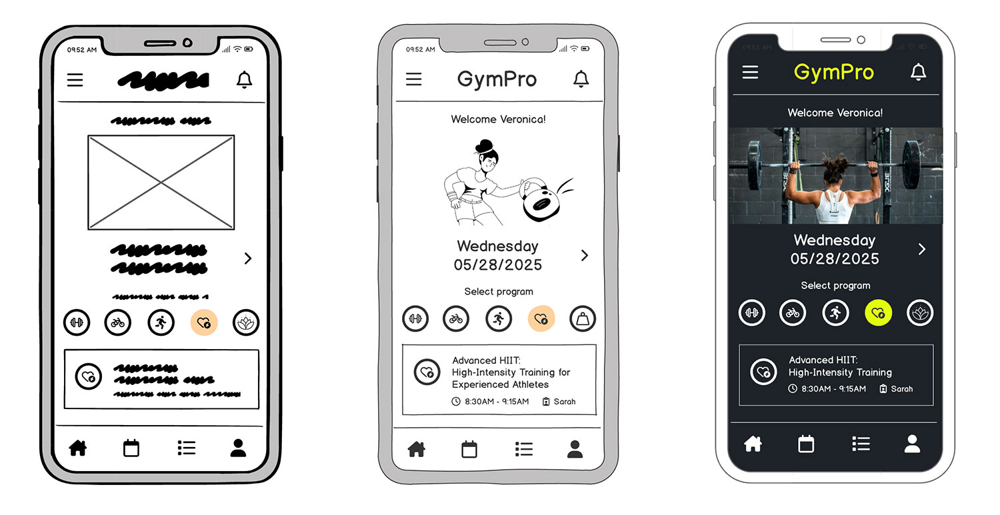
Gray boxes, placeholders. Fast to create. Easy to throw away.
Real colors, images, text. Looks final. Takes much longer.
Click the button to watch a wireframe evolve into a finished design.
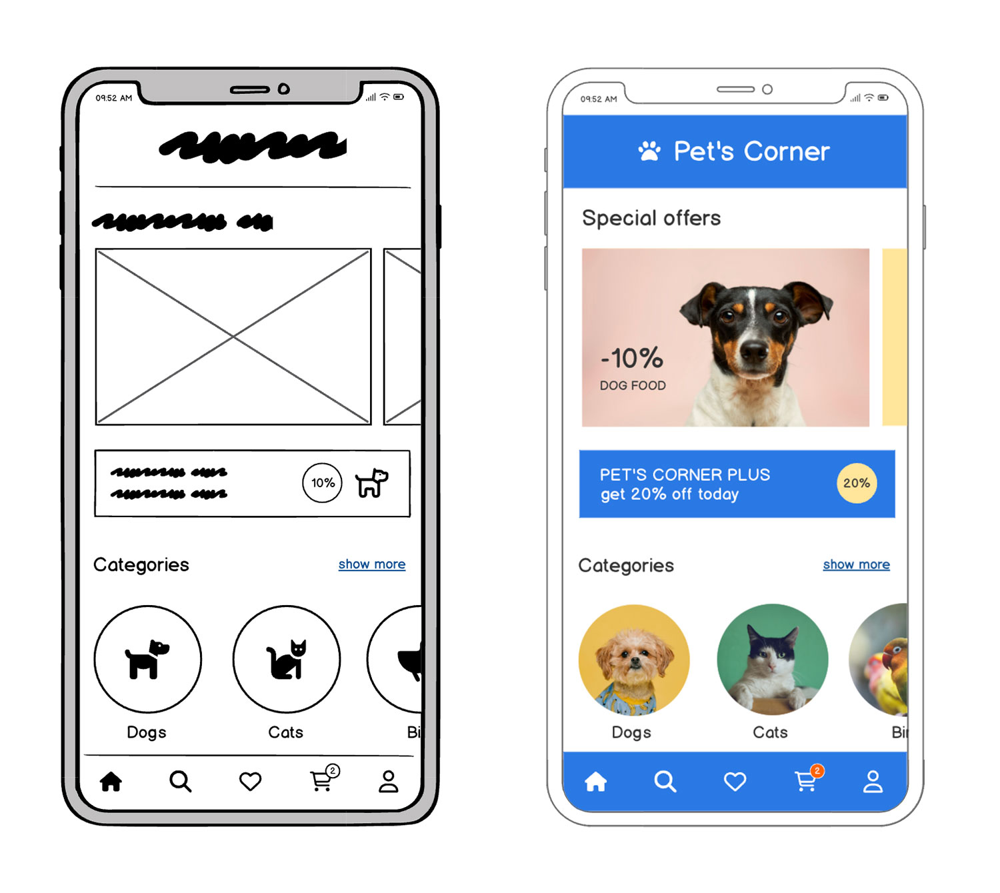
Bullet points, not design. What info must be on this page?
What must users see first? This becomes your hierarchy.
5 min each. No perfectionism. Rectangles + labels.
Which serves the hierarchy best? Passes the 10-second test?
Now — and only now — open a design tool.
lawsofux.com — Visual cards for every design law covered today
10 Usability Heuristics — The canonical reference
Contrast Checker — Verify WCAG compliance
coolors.co — Generate color palettes instantly
hotjar.com — Heatmaps, recordings, and surveys
w3schools.com/css — CSS properties reference & try-it editors